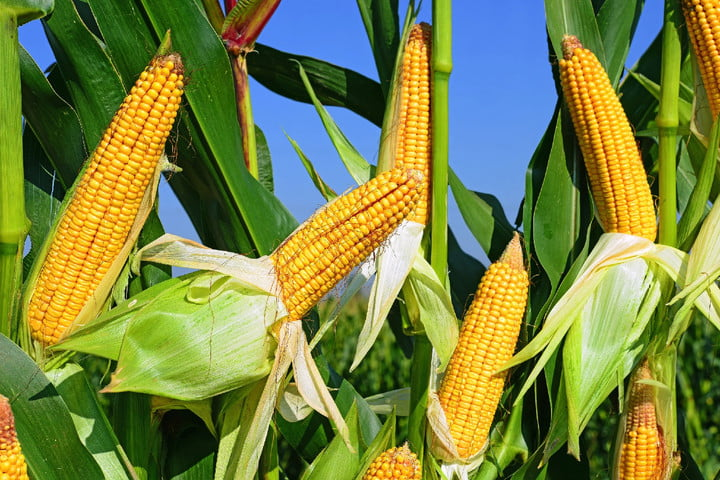

Fresh produce grown locally with no additives or hormones.
- Locally grown food is full of flavor. When grown locally, the crops are picked at their peak of ripeness versus being harvested early in order to be shipped and distributed to your local retail store. Many times produce at local markets has been picked within 24 hours of your purchase.
- Eating local food is eating seasonally. Even though we wish strawberries were grown year round in Michigan, the best time to eat them is when they can be purchased directly from a local grower. They are full of flavor and taste better than the ones available in the winter that have traveled thousands of miles and picked before they were ripe.
- Local food has more nutrients. Local food has a shorter time between harvest and your table, and it is less likely that the nutrient value has decreased. Food imported from far-away states and countries is often older, has traveled and sits in distribution centers before it gets to your store.
- Local food supports the local economy. The money that is spent with local farmers and growers all stays close to home and is reinvested with businesses and services in your community.